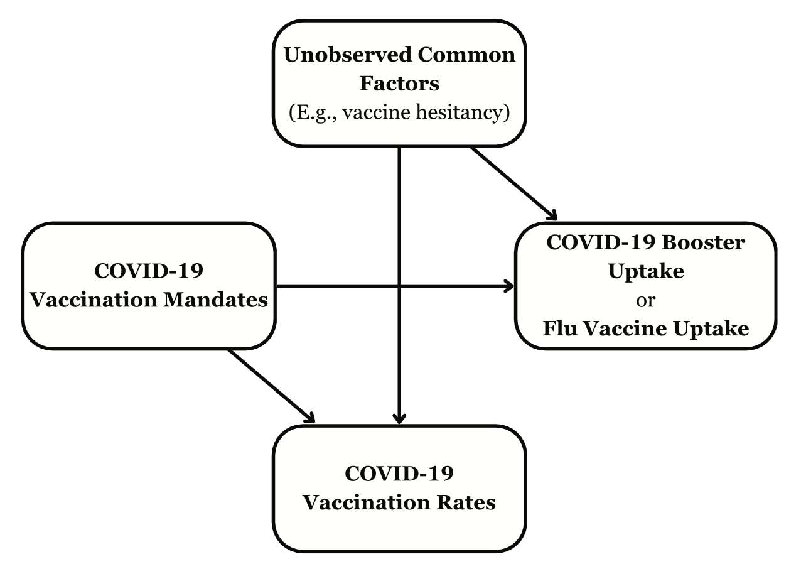
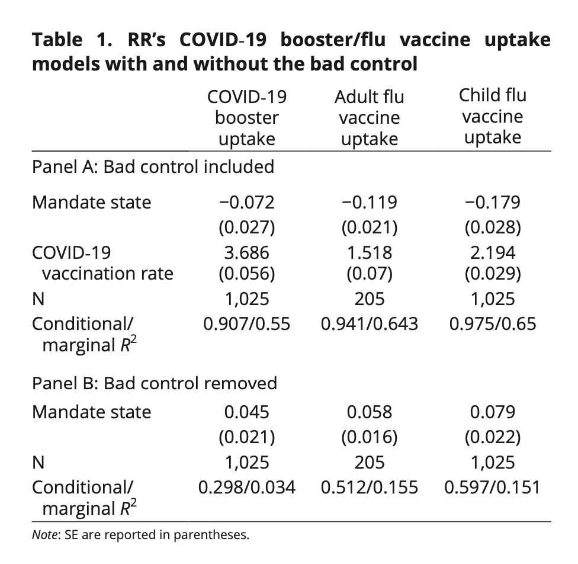

library(kableExtra)
library(here)
library(lme4)
library(lmerTest)
library(performance) 88 Collider bias
Prerequisiti
- Leggere A crash course in good and bad controls (Cinelli et al., 2024).
Concetti e competenze chiave
- Collider.
- Bias del collider.
Preparazione del Notebook
Introduzione
Uno studio recente di Fitzgerald (2024) ha messo in discussione i risultati di una precedente analisi condotta da Rains & Richards (2024) sull’impatto dei mandati vaccinali COVID-19. Rains & Richards (2024) avevano confrontato stati che avevano introdotto mandati con stati che li avevano vietati, cercando di valutare l’effetto di queste politiche sui tassi di vaccinazione COVID-19 e sui vaccini antinfluenzali.
Fitzgerald (2024) ha evidenziato un problema metodologico nell’analisi di Rains & Richards (2024), indicando la presenza di un “bias del collider”. Questo tipo di bias si verifica quando si controlla per una variabile, chiamata “collider”, che è influenzata da due variabili precedenti (genitori) in un grafo aciclico diretto (DAG) e che, a sua volta, influisce sulla variabile dipendente di interesse. Nel caso specifico, il tasso di vaccinazione COVID-19 fungeva da collider, poiché era influenzato sia dai mandati vaccinali sia da altri fattori, come l’esitazione vaccinale. L’inclusione di questa variabile come controllo nel modello ha distorto i risultati, portando a conclusioni errate.
Lo studio di Fitzgerald (2024) sottolinea l’importanza di considerare attentamente la struttura causale dei dati nelle analisi statistiche. Questo caso evidenzia come la scelta delle variabili di controllo possa influenzare drasticamente i risultati e le conseguenti interpretazioni.
88.1 Rains e Richards (2024)
Lo studio di Rains & Richards (2024) sui mandati di vaccinazione COVID-19 negli Stati Uniti ha portato a due conclusioni principali:
- I mandati statali non hanno avuto un effetto significativo sull’adozione del vaccino COVID-19.
- Gli stati con mandati di vaccinazione COVID-19 hanno mostrato una minore adozione dei vaccini antinfluenzali e dei richiami del vaccino COVID-19 rispetto agli stati che avevano vietato tali mandati.
88.2 Fitzgerald (2024)
Fitzgerald (2024) critica la seconda conclusione dello studio di Rains e Richards, identificando un errore metodologico cruciale. Il problema principale risiede nell’inclusione del tasso di vaccinazione COVID-19 come variabile di controllo nei modelli statistici.
Questo approccio è problematico per tre ragioni:
- Fattori comuni come l’esitazione vaccinale influenzano sia l’adozione del vaccino COVID-19 che altri vaccini, come quello antinfluenzale.
- I mandati possono influenzare sia l’adozione dei richiami COVID-19 che dei vaccini antinfluenzali.
- Controllare i tassi di vaccinazione COVID-19 nei modelli può distorcere i risultati, introducendo un “bias del collider.”

Fitzgerald (2024) dimostra che, eliminando questa variabile di controllo errata dai modelli di Rains & Richards (2024), i risultati si invertono. Infatti, gli stati che hanno imposto i mandati di vaccinazione mostrano tassi più alti di adozione sia dei richiami COVID-19 che dei vaccini antinfluenzali.

88.3 Analisi statistica
Di seguito è riportato il codice R utilizzato da Fitzgerald (2024) per replicare l’analisi, evidenziando la variazione nei coefficienti relativi alla variabile “Mandate State”. Quando il modello include il tasso di vaccinazione COVID-19 come controllo, i coefficienti risultano negativi. Tuttavia, rimuovendo questo controllo, i coefficienti cambiano di segno, diventando positivi, evidenziando l’impatto del collider bias sull’analisi originale.
L’inversione del segno dei coefficienti sottolinea come l’inclusione di una variabile di controllo inappropriata possa portare a conclusioni fuorvianti sull’effetto dei mandati vaccinali sull’adozione dei vaccini. L’analisi di Fitzgerald (2024) dimostra l’importanza di considerare attentamente le relazioni causali tra le variabili in studi di epidemiologia e sanità pubblica. La scelta delle variabili di controllo è cruciale per evitare errori metodologici che possono compromettere la validità dei risultati.
booster_analysis <- read.csv(
here("data", "fitzgerald_2024", "booster_analysis.csv")
)
flu_analysis_adult <- read.csv(
here("data", "fitzgerald_2024", "flu_analysis_adult.csv")
)
flu_analysis_children <- read.csv(
here("data", "fitzgerald_2024", "flu_analysis_children.csv")
)# Create space for table data
table_data <- as.data.frame(matrix(nrow = 13, ncol = 4))
colnames(table_data) <- NULL
# Input column information
table_data[1, ] <-
c("", "COVID-19 Booster Uptake", "Adult Flu Vaccine Uptake", "Child Flu Vaccine Uptake")
###############
### PANEL A ###
###############
# Insert panel information
table_data[2, ] <- c("\\textbf{Panel A: Bad Control Included}", rep("", 3))
# Insert variables and model characteristics
table_data[3, 1] <- "Mandate State"
table_data[4, 1] <- ""
table_data[5, 1] <- "COVID-19"
table_data[6, 1] <- "Vaccination Rate"
table_data[7, 1] <- "$N$"
table_data[8, 1] <- "Conditional/marginal $R^2$"
# COVID-19 booster uptake model
model <- lmer(
prop_boosted ~ mandate_type + prop_vacc_center + (1 | state_ab),
data = booster_analysis
)
r2 <- r2(model)
model <- summary(model)
# Insert estimates
table_data[3, 2] <- round(model$coefficients[2, 1], 3)
table_data[4, 2] <- paste0("(", round(model$coefficients[2, 2], 3), ")")
table_data[5, 2] <- round(model$coefficients[3, 1], 3)
table_data[6, 2] <- paste0("(", round(model$coefficients[3, 2], 3), ")")
table_data[7, 2] <- length(model$residuals)
table_data[8, 2] <- paste0(round(r2$R2_conditional, 3), "/", round(r2$R2_marginal, 3))
# Adult flu vaccine uptake model
model <- lmer(
flu_vacc_est ~ mandate_type + cvd_vac_prop_cent + (1 | state_ab),
data = flu_analysis_adult
)
r2 <- r2(model)
model <- summary(model)
# Insert estimates
table_data[3, 3] <- round(model$coefficients[2, 1], 3)
table_data[4, 3] <- paste0("(", round(model$coefficients[2, 2], 3), ")")
table_data[5, 3] <- round(model$coefficients[3, 1], 3)
table_data[6, 3] <- paste0("(", round(model$coefficients[3, 2], 3), ")")
table_data[7, 3] <- length(model$residuals)
table_data[8, 3] <- paste0(round(r2$R2_conditional, 3), "/", round(r2$R2_marginal, 3))
# Child flu vaccine uptake model
model <- lmer(
flu_vacc_est ~ mandate_type + cvd_vac_prop_cent + (1 | state_ab),
data = flu_analysis_children
)
r2 <- r2(model)
model <- summary(model)
# Insert estimates
table_data[3, 4] <- round(model$coefficients[2, 1], 3)
table_data[4, 4] <- paste0("(", round(model$coefficients[2, 2], 3), ")")
table_data[5, 4] <- round(model$coefficients[3, 1], 3)
table_data[6, 4] <- paste0("(", round(model$coefficients[3, 2], 3), ")")
table_data[7, 4] <- length(model$residuals)
table_data[8, 4] <- paste0(round(r2$R2_conditional, 3), "/", round(r2$R2_marginal, 3))
###############
### PANEL B ###
###############
# Insert panel information
table_data[9, ] <- c("\\textbf{Panel B: Bad Control Removed}", rep("", 3))
# Insert variables and model characteristics
table_data[10, 1] <- "Mandate State"
table_data[11, 1] <- ""
table_data[12, 1] <- "$N$"
table_data[13, 1] <- "Conditional/marginal $R^2$"
# COVID-19 booster uptake model
model <- lmer(
prop_boosted ~ mandate_type + (1 | state_ab),
data = booster_analysis
)
r2 <- r2(model)
model <- summary(model)
# Insert estimates
table_data[10, 2] <- round(model$coefficients[2, 1], 3)
table_data[11, 2] <- paste0("(", round(model$coefficients[2, 2], 3), ")")
table_data[12, 2] <- length(model$residuals)
table_data[13, 2] <- paste0(round(r2$R2_conditional, 3), "/", round(r2$R2_marginal, 3))
# Adult flu vaccine uptake model
model <- lmer(
flu_vacc_est ~ mandate_type + (1 | state_ab),
data = flu_analysis_adult
)
r2 <- r2(model)
model <- summary(model)
# Insert estimates
table_data[10, 3] <- round(model$coefficients[2, 1], 3)
table_data[11, 3] <- paste0("(", round(model$coefficients[2, 2], 3), ")")
table_data[12, 3] <- length(model$residuals)
table_data[13, 3] <- paste0(round(r2$R2_conditional, 3), "/", round(r2$R2_marginal, 3))
# Child flu vaccine uptake model
model <- lmer(
flu_vacc_est ~ mandate_type + (1 | state_ab),
data = flu_analysis_children
)
r2 <- r2(model)
model <- summary(model)
# Insert estimates
table_data[10, 4] <- round(model$coefficients[2, 1], 3)
table_data[11, 4] <- paste0("(", round(model$coefficients[2, 2], 3), ")")
table_data[12, 4] <- length(model$residuals)
table_data[13, 4] <- paste0(round(r2$R2_conditional, 3), "/", round(r2$R2_marginal, 3))# Produce and save table
table <- kbl(table_data,
format = "pipe",
align = c("l", "c", "c", "c", "c", "c", "c", "c"),
caption = "Table 1: Effects of Vaccine Mandates on Vaccine Uptake"
)table
cat("\nNote: Standard errors are reported in parentheses.")
Table: Table 1: Effects of Vaccine Mandates on Vaccine Uptake
| | | | |
|:--------------------------------------|:-----------------------:|:------------------------:|:------------------------:|
| | COVID-19 Booster Uptake | Adult Flu Vaccine Uptake | Child Flu Vaccine Uptake |
|\textbf{Panel A: Bad Control Included} | | | |
|Mandate State | -0.072 | -0.119 | -0.179 |
| | (0.027) | (0.021) | (0.028) |
|COVID-19 | 3.686 | 1.518 | 2.194 |
|Vaccination Rate | (0.056) | (0.07) | (0.029) |
|$N$ | 1025 | 205 | 1025 |
|Conditional/marginal $R^2$ | 0.907/0.55 | 0.941/0.643 | 0.975/0.65 |
|\textbf{Panel B: Bad Control Removed} | | | |
|Mandate State | 0.045 | 0.058 | 0.079 |
| | (0.021) | (0.016) | (0.022) |
|$N$ | 1025 | 205 | 1025 |
|Conditional/marginal $R^2$ | 0.298/0.034 | 0.512/0.155 | 0.597/0.151 |
Note: Standard errors are reported in parentheses.88.4 Considerazioni Conclusive
Il concetto chiave introdotto da Fitzgerald (2024) è il “bias del collider”. Un “collider” è una variabile influenzata da due o più altre variabili nel modello. Nel caso specifico:
- I tassi di vaccinazione COVID-19 sono il collider, poiché sono influenzati sia dai mandati vaccinali che da altri fattori, come l’esitazione vaccinale.
- Controllando i tassi di vaccinazione COVID-19 come se fossero una variabile indipendente, si blocca il percorso causale tra i mandati vaccinali e altre variabili, come l’adozione dei richiami o dei vaccini antinfluenzali.
Questo porta a una stima distorta dell’effetto dei mandati sui comportamenti vaccinali successivi. Contrariamente alle conclusioni di Rains & Richards (2024), che suggerivano un effetto negativo dei mandati sull’adozione dei vaccini, l’analisi corretta di Fitzgerald (2024) ha rivelato un effetto positivo. Questo dimostra come il collider bias possa non solo alterare la magnitudine degli effetti stimati, ma addirittura invertirne la direzione.
In conclusione, il bias del collider è un errore comune nelle analisi statistiche che può condurre a risultati fuorvianti se non viene identificato e gestito correttamente. Nel caso specifico dei mandati vaccinali, controllare i tassi di vaccinazione COVID-19 come variabile di controllo blocca una parte della relazione causale tra mandati e comportamenti successivi, come l’adozione di richiami o di vaccini antinfluenzali. Questo errore metodologico può portare a conclusioni errate e fuorvianti. Lo stesso principio si applica a studi in altri ambiti, come la psicologia, dove il controllo di variabili che fungono da collider può mascherare relazioni causali importanti e portare a conclusioni errate. È essenziale, quindi, prestare molta attenzione alla scelta delle variabili di controllo per garantire la validità dei risultati negli studi osservazionali.
Esercizi
Esercizio 88.1 Approfondire la comprensione del bias del collider attraverso l’implementazione pratica del codice R messo a disposizione da Cinelli et al. (2024). Esegui il codice passo dopo passo, cercando di comprendere lo scopo di ogni linea. Identifica i punti chiave dell’analisi che evidenziano il bias del collider. Modifica alcune parti del codice per osservare come cambiano i risultati. Prova a simulare diversi scenari per consolidare la tua comprensione del fenomeno.
Informazioni sull’Ambiente di Sviluppo
%load_ext watermark
%watermark -n -u -v -iv -w -mLast updated: Sat Jul 27 2024
Python implementation: CPython
Python version : 3.12.4
IPython version : 8.26.0
Compiler : Clang 16.0.6
OS : Darwin
Release : 23.5.0
Machine : arm64
Processor : arm
CPU cores : 8
Architecture: 64bit
networkx : 3.3
pandas : 2.2.2
bambi : 0.14.0
seaborn : 0.13.2
graphviz : 0.20.3
numpy : 1.26.4
arviz : 0.18.0
matplotlib : 3.9.1
statsmodels: 0.14.2
Watermark: 2.4.3